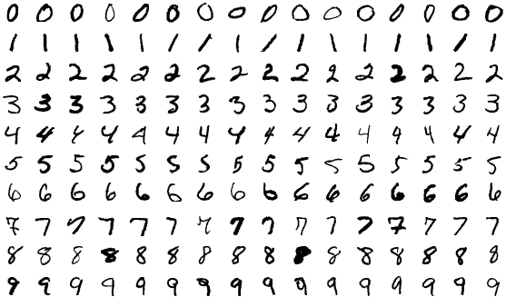
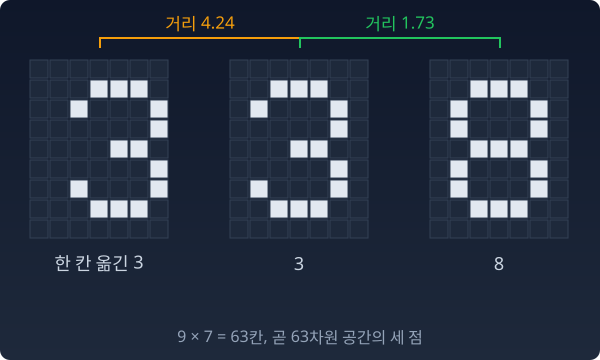
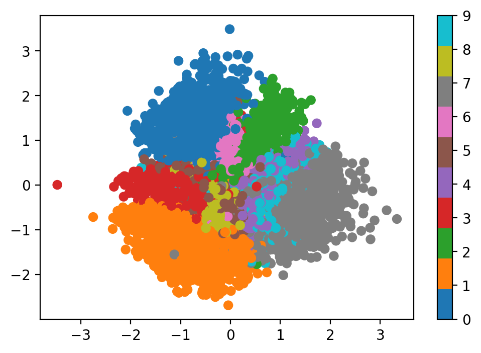
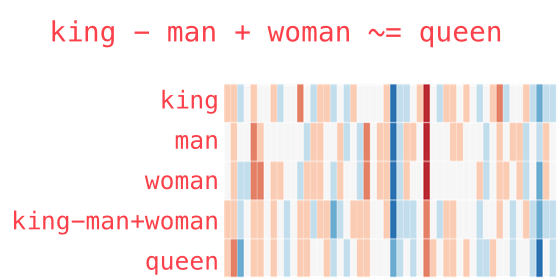
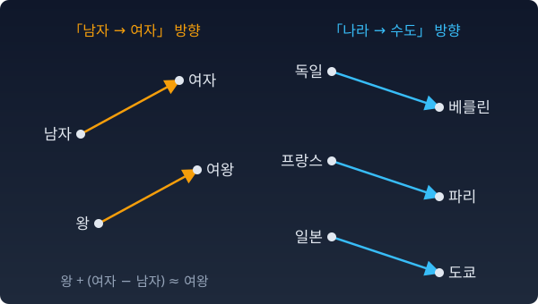
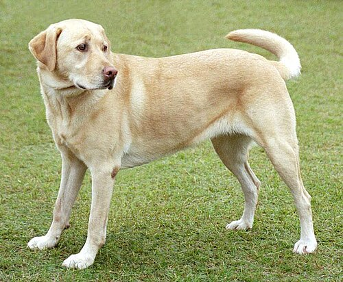
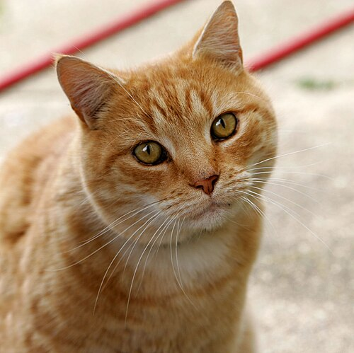
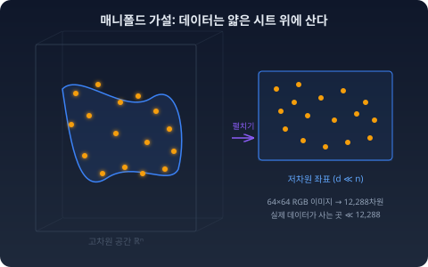

확률분포 하나를 공간의 점 하나라고 부르자. 이 한 문장이 이 책의 출발점이다. 그런데 무엇을 점이라고 부른다는 것은 정확히 무슨 일이고, 그렇게 불러서 무엇을 얻는가? 분포보다 익숙한 사진과 낱말에서 먼저 시작하자.
공간 속의 점: 어디에 놓느냐가 가까움을 정한다
무엇이든 숫자의 나열로 바꿀 수 있다면, 그것은 공간의 점이 된다. 사진 한 장도, 단어 하나도. 그렇다면 점으로 바꾸기만 하면, 비슷한 것끼리 저절로 가까이 찍힐까? 당연해 보이는 이 물음의 답은 당연하지 않다.
숫자로 바꾼다고 끝이 아니다
MNIST 데이터셋을 본 적이 있을 것이다. 손글씨 숫자 사진을 모아 둔 표준 자료로, 28×28 픽셀 이미지가 학습용 6만 장, 시험용 1만 장, 모두 7만 장이다.

MNIST 손글씨 숫자 샘플
한 장의 이미지를 펼치면 784개의 숫자가 된다. 첫 번째 픽셀의 밝기, 두 번째 픽셀의 밝기, …, 784번째 픽셀의 밝기. 그러니까 손글씨 ‘3’ 한 장은 784차원 공간의 점 하나다.
7만 장의 손글씨를 전부 펼치면, 784차원 공간에 7만 개의 점이 찍힌다. 점은 찍었다. 하지만 이 784차원 공간은 별로 쓸모가 없다. 같은 '3’이라도 획이 조금만 삐뚤어지면 픽셀값이 확 달라진다. 다른 숫자인 '8’이 오히려 픽셀값으로는 더 비슷할 수도 있다.
정말 그런지 작은 종이로 재 보자. 가로 7칸, 세로 9칸짜리 종이에 '3’을 그리고, 같은 '3’을 오른쪽으로 한 칸만 옮겨 그리고, 옆에 '8’을 그린다. 칸마다 밝기 차이를 제곱해 모두 더한 뒤 제곱근을 씌운 값을 거리로 삼으면, 한 칸 옮긴 '3’까지는 4.24, '8’까지는 1.73이다. 같은 글자가 다른 글자보다 두 배 넘게 멀다.

한 칸 옮긴 3, 3, 8을 9×7칸 종이에 그리고 픽셀 거리를 잰 그림
숫자로 바꿨다는 사실만으로는, 점들 사이의 거리가 의미를 갖지 않는다.
그런데 VAE 같은 방법으로 이 점들을 2차원 평면으로 압축해 옮기면 신기한 일이 보인다. VAE(변분 오토인코더, Variational AutoEncoder)는 사진을 적은 수의 숫자로 줄였다가 다시 사진으로 되살리도록 학습하는 신경망이다. 그 적은 수의 숫자로 점을 찍으면 '3’들은 '3’들끼리, '7’들은 '7’들끼리 모여 있다. 아무도 "모여라"고 명령하지 않았는데, 비슷한 것들이 가까이 찍힌다.

VAE 2D 잠재공간 — 같은 숫자끼리 모인다
784차원 픽셀 공간에서는 보이지 않던 구조가, 다른 공간으로 옮기니까 드러난 것이다.
영어 단어도 마찬가지다. "king"을 ASCII 코드(글자마다 번호를 매겨 둔 표)로 쓰면 숫자의 나열이 되지만, 거기에 기하학은 없다. "king"과 "queen"이 가까운지 먼지를 ASCII 값으로는 알 수 없다.
그런데 Word2Vec이라는 알고리즘이 단어 하나를 수백 개의 숫자로 바꿔 놓으면, 상황이 달라진다. 구글이 뉴스 기사로 학습해 공개한 Word2Vec 단어 벡터는 단어 하나를 300개의 숫자로 적는다. 이 300차원 공간에서는 점들 사이의 방향이 의미를 가진다.
king − man + woman ≈ queen

Word2Vec — king - man + woman ≈ queen
"남자에서 여자로"라는 방향이 공간 안에 존재한다. 왕에서 출발해 그 방향으로 한 걸음 가면 여왕 근처에 닿는다. Word2Vec을 내놓은 미콜로프(Tomas Mikolov) 팀의 2013년 논문에는 나라 이름과 수도 이름의 점을 평면에 옮겨 그린 그림이 있는데, 나라에서 수도로 가는 화살표가 중국→베이징, 러시아→모스크바, 일본→도쿄처럼 나라마다 거의 나란하다.

「남자 → 여자」 화살표와 「나라 → 수도」 화살표가 저마다 거의 나란하게 놓인 개념도. 점의 자리는 실제 값이 아니다
패턴이 보인다. 숫자로 바꾸는 것 자체는 시작일 뿐이다. 어떤 공간에 놓느냐에 따라 가까움과 멂이 의미를 갖기도, 갖지 않기도 한다. 좋은 공간에서는 비슷한 것이 가깝고, 다른 것이 멀다. 나쁜 공간에서는 모든 것이 뒤섞여 있다.
개와 고양이 — 좋은 공간에서는 문제가 쉬워진다
이것이 실제로 어떤 차이를 만드는지 보자.
개 사진 한 장과 고양이 사진 한 장이 있다.


둘 다 64×64 RGB 이미지라면, 각각 12,288차원 공간의 점이다.
이 픽셀 공간에서 개와 고양이를 분류해보자. 하이퍼플레인 하나 — 공간을 반으로 가르는 평면 — 를 그어서 한쪽에 개를, 다른 쪽에 고양이를 모을 수 있을까?
잘 되지 않는다. 배경이 바뀌고, 포즈가 바뀌고, 조명이 바뀌면 픽셀값은 완전히 달라지는데, 여전히 같은 개다. "개다움"은 픽셀의 나열 속에 숨어 있지, 표면에 드러나 있지 않다.
같은 이미지를 CNN — 합성곱 신경망 — 에 통과시키면 어떤 일이 일어나는가. CNN의 마지막 층은 이미지를 훨씬 적은 수의 숫자로 요약한다. 몇 개로 줄이는지는 모델마다 다른데, 얼굴 인식 모델 FaceNet(2015)은 얼굴 사진 한 장을 128개의 숫자로 줄였다. 여기서도 128개라고 하자. 12,288차원에서 128차원으로.
잘 학습된 CNN이라면 이 128차원 공간에서는 기적 같은 일이 일어난다. 개들은 한쪽으로, 고양이들은 다른 쪽으로 모인다. 하이퍼플레인 하나로 거의 깔끔하게 갈라진다.
같은 대상이다. 같은 개, 같은 고양이. 그런데 공간을 바꿨을 뿐인데, 풀기 어렵던 문제가 쉬워진다.
ML에서: 매니폴드 가설 — 왜 좋은 공간이 존재하는가

매니폴드 가설
왜 공간을 바꾸면 분류가 쉬워지는 걸까? "운이 좋아서"가 아니다. 구조적인 이유가 있다.
64×64 RGB 이미지의 공간은 12,288차원이다. 이 공간의 점을 하나 무작위로 찍어보자. 12,288개의 숫자를 각각 0에서 255 사이에서 랜덤하게 뽑는다. 화면에 표시하면? 노이즈다. 텔레비전의 지직거림. 개도 아니고, 고양이도 아니고, 그 어떤 의미 있는 이미지도 아니다.
12,288차원 공간은 광대하다. 그런데 "개 사진"이라고 부를 수 있는 것들은 그 광대한 공간의 극히 일부에만 존재한다. 랜덤으로 점을 찍어서 개 사진이 나올 확률은 사실상 0이다.
실제 이미지들 — 개든 고양이든 풍경이든 — 은 12,288차원 공간 전체에 퍼져 있지 않다. 그 안의 훨씬 낮은 차원의 얇은 시트 위에 몰려 있다. 구겨지고 접힌 시트. 수학에서는 이것을 매니폴드(manifold)라고 부른다.
좋은 공간이 존재할 수 있는 이유가 여기에 있다. 데이터가 애초에 저차원 시트 위에 살고 있으니까, 그 시트를 찾아서 펼치면 구조가 드러난다. CNN이 하는 일의 본질이 바로 이것이다. 접혀 있어서 개와 고양이가 뒤엉켜 보이던 시트를 펼쳐 놓으면, 원래 다른 곳에 살고 있던 것들이 양쪽으로 갈라진다.
이 관찰을 매니폴드 가설이라 부른다: 실제 데이터는 고차원 공간 전체가 아니라, 그 안의 저차원 매니폴드 위에 집중되어 있다.
매니폴드라는 단어를 정식으로 다루려면 준비가 더 필요하다. 지금은 감각만 가져가자: 데이터가 사는 진짜 공간은 우리가 보는 것보다 훨씬 작고, 그 작은 공간을 찾아내는 것이 기계학습의 핵심 문제 중 하나다.
파이썬
import numpy as np
def glyph(rows): # '#' = 잉크(1), '.' = 빈칸(0)
return np.array([[c == "#" for c in r] for r in rows], dtype=float)
three = glyph([".###.", "#...#", "....#", "..##.", "....#", "#...#", ".###."])
eight = glyph([".###.", "#...#", "#...#", ".###.", "#...#", "#...#", ".###."])
def put(g, dx=0): # 9×7 종이 위에 올려놓기 (dx 칸 오른쪽으로)
paper = np.zeros((9, 7))
paper[1:8, 1 + dx:6 + dx] = g
return paper.ravel() # 펼치면 63차원 공간의 점 하나
a, a_moved, b = put(three), put(three, dx=1), put(eight)
dist = lambda u, v: np.sqrt(((u - v) ** 2).sum())
print("차원 :", a.size)
print("3 ↔ 한 칸 옮긴 3:", round(dist(a, a_moved), 2))
print("3 ↔ 8 :", round(dist(a, b), 2))
# 차원 : 63
# 3 ↔ 한 칸 옮긴 3: 4.24
# 3 ↔ 8 : 1.73
종이 위의 그림은 63차원 공간의 점이 되었고, 그 공간의 자로 재니 같은 글자보다 다른 글자가 가까웠다. 점으로 만드는 일과 가까움이 뜻을 갖게 하는 일은 따로다.
수확
“무엇이든 숫자로 적으면 점이 된다. 하지만 두 점이 가까운지 먼지는 어떤 공간에 놓느냐가 정한다.”
인물 이야기 — 칼 피어슨과 “데이터를 보는 눈”
칼 피어슨
19세기 말, 런던 유니버시티 칼리지. 칼 피어슨(Karl Pearson)은 원래 통계학자가 아니었다. 케임브리지에서 수학을 공부한 뒤 독일로 건너가 하이델베르크와 베를린에서 물리학, 철학, 법학, 문학을 두루 들었다. 1884년, 그는 유니버시티 칼리지의 응용수학 교수로 부임했다. 그가 통계학으로 돌아선 데에는 생물학자 프랜시스 골턴(Francis Galton)과 동물학자 월터 웰던(Walter Weldon)과의 만남이 컸다.
골턴은 다윈과 할아버지를 같이 둔 사촌이었고, 유전의 법칙을 수로 잡고 싶어 했다. 아버지의 키와 아들의 키 사이에 관계가 있다는 건 알겠는데, 그 관계를 어떻게 정확히 숫자로 적을 것인가? 골턴은 "회귀(regression)"라는 말을 만들었지만, 수학적 도구가 부족했다.
피어슨이 그 도구를 다듬었다. 상관계수의 표준 공식, 카이제곱 검정, 히스토그램이라는 이름, 주성분분석 — 오늘날 데이터 분석의 기본 어휘 상당수가 피어슨을 거쳐 나왔다. 그런데 이 도구들의 바닥에 공통된 발상이 하나 있다. 데이터를 공간의 점으로 보는 것.
사람 한 명의 키와 팔 길이를 (x, y) 평면의 점으로 찍으면, 수백 명의 데이터가 하나의 점구름(point cloud)이 된다. 골턴이 먼저 그런 그림을 그렸다면, 피어슨은 그 점구름에 수학을 입혔다. 점구름의 모양이 곧 변수들 사이의 관계다. 길쭉하게 늘어져 있으면 상관이 높고, 둥글면 상관이 없다. 1901년 주성분분석을 처음 내놓은 논문의 제목부터가 「공간의 점들에 가장 가깝게 맞는 선과 평면에 대하여」였다.
이것은 사고방식의 전환이었다. 숫자를 하나씩 보는 대신 공간에 뿌려놓고 형태를 본다. 히스토그램이라는 이름을 처음 쓴 사람으로 알려진 것도 같은 맥락이다. 분포를 눈으로 보게 만든 것.
피어슨은 통계의 방법을 두고 다음 세대의 로널드 피셔(Ronald Fisher)와 오랫동안 격렬하게 다투기도 했다.
피어슨이 연 문은 이것이다: 데이터를 점으로, 점들의 집합을 공간의 구조로 읽는 습관. 이 절에서 우리가 한 일 — 이미지를 784차원의 점으로, 단어를 300차원의 점으로 만든 것 — 의 뿌리가 거기에 있다. 다음 절은 한 걸음 더 나아가, 데이터가 아니라 분포 자체를 점으로 만든다.
문제 1. 「개」와 「게」는 가까운가
낱말을 자모로 풀어 적고, 자모 하나를 바꾸거나 넣거나 빼는 횟수를 두 낱말 사이의 거리로 삼자(편집 거리). 「개」는 ㄱ, ㅐ 두 자모다. (가) 「개」에서 「게」, 「새」, 「개미」, 「강아지」까지의 거리를 구하라. (나) 뜻으로 「개」에 가장 가까운 낱말과, 이 거리로 가장 가까운 낱말을 견주어라. (다) 그렇다면 이 거리는 쓸모없는 자인가?
함께 풀기
김민준
코드로 셌어요. 게 1, 새 1, 개미 2, 강아지 6이에요. 강아지는 ㄱ, ㅏ, ㅇ, ㅇ, ㅏ, ㅈ, ㅣ 일곱 자모라서 멀어요.
이서연
(나)는 거꾸로네. 뜻으로는 강아지가 제일 가까운데 거리로는 제일 멀고, 게는 뜻이 전혀 다른데 제일 가까워.
이서연
그럼 이 거리는 틀린 자예요. 버려야죠.
선생님
휴대폰 자판으로 「개」를 치다가 손가락이 옆 글쇠를 누르면 무엇이 나와요?
이서연
ㅐ 바로 옆이 ㅔ니까 「게」가 나오겠죠. 맞춤법 검사기가 「게」를 보고 「개」를 떠올리려면, 자모 하나 차이가 가까워야 해요. 오타를 고치는 일에는 이 자가 딱 맞네요.
선생님
그래요. 자가 틀린 게 아니라, 무엇을 가깝게 두고 싶은지가 달랐어요. 뜻을 재려면 뜻이 비슷한 낱말끼리 가까이 찍히는 다른 공간이 필요해요.
김민준
조교님이 제출 파일을 이름순으로 정렬해 놓고, 옆에 붙은 파일끼리 답이 비슷할 거라고 보면 안 된다고 했던 거랑 같네요. 순서가 가깝다고 내용이 가까운 건 아니니까요.
문제 2. 빈 종이가 더 가깝다
위 파이썬의 9 × 7칸 종이에서 「3」은 잉크가 14칸이다. (가) 「3」과 아무것도 그리지 않은 빈 종이 사이의 거리를 구해, 「한 칸 옮긴 3」까지의 거리 4.24와 견주어라. (나) 잉크가 m칸인 그림을 옮겼더니 원래 그림과 k칸이 겹쳤다. 두 그림 사이 거리의 제곱을 m과 k로 나타내고, 옮긴 그림이 빈 종이보다 멀어지는 조건을 구하라. (다) 이 픽셀 거리는 거리가 갖춰야 할 조건(자기 자신과는 0, 순서를 바꿔도 같음, 삼각부등식)을 모두 만족하는가? 만족한다면 무엇이 잘못인가?
함께 풀기
김민준
빈 종이와는 3의 잉크 14칸이 모두 다르니까 √14 ≈ 3.74예요. 한 칸 옮긴 3의 4.24보다 가까워요. …제 코드가 틀렸나 봐요. 3에 더 가까운 게 빈 종이라니요.
선생님
코드를 의심하기 전에, 두 3이 몇 칸 겹치는지 세 봐요.
김민준
5칸 겹쳐요. 둘 다 14칸이니까 한쪽에만 있는 칸이 9칸씩, 합쳐서 18칸이에요. √18 ≈ 4.24. 코드랑 같네요.
이서연
그럼 (나)는 한쪽에만 있는 칸이 (m − k)개씩이니까 거리의 제곱은 2m − 2k예요. 빈 종이까지는 m이고요. 2m − 2k > m이면 k < m/2. 겹치는 잉크가 절반이 안 되면 옮긴 그림이 빈 종이보다 멀어요. 3은 14칸 가운데 5칸만 겹쳐서 걸렸고요.
김민준
획이 가는 글씨는 한 칸만 옮겨도 거의 안 겹치니까… 손글씨는 늘 이 조건에 걸리겠네요.
선생님
(다)는요?
이서연
칸마다 차이를 제곱해 더하고 제곱근을 씌운 거니까 보통의 유클리드 거리예요. 세 조건을 다 만족해요. 그러니까 틀린 거리는 아닌데…
선생님
거리의 조건을 다 갖춘 자가 3을 빈 종이 쪽에 더 가깝게 놓았어요. 그 조건들이 막아 주지 못한 게 뭐죠?
이서연
조건은 자가 앞뒤가 맞는지만 따지지, 무엇과 무엇을 가깝게 둘지는 정해 주지 않아요. 픽셀 거리는 "같은 자리에 잉크가 있느냐"를 재는데, 우리가 원한 건 "같은 글자냐"였어요. 자를 고칠 게 아니라 공간을 바꿔야 풀리는 문제예요.
이서연
위상수학 시간에 같은 집합 위에 거리를 여러 개 줄 수 있다고 배웠어요. 모두 거리인데 무엇이 가까운지는 저마다 달랐죠.
문제 3. 한국 − 서울 + 도쿄
설명을 위해 만든 2차원 단어 벡터가 있다(실제 Word2Vec 값이 아니다). 서울 (1.0, 0.0), 한국 (1.0, 1.0), 도쿄 (1.3, 0.1), 일본 (1.65, 1.0), 베이징 (2.4, −0.1), 중국 (2.7, 0.95). 원래 방법은 각도로 재는 코사인 유사도를 쓰지만, 여기서는 이 절의 거리로 잰다. (가) 한국 − 서울 + 도쿄를 계산하고, 여섯 낱말 가운데 그 점에 가장 가까운 것을 찾아라. (나) 「서울 → 한국」과 「도쿄 → 일본」 두 화살표는 얼마나 나란한가? (다) Word2Vec의 유추 시험을 채점하는 코드는 물음에 쓴 세 낱말을 답 후보에서 뺀다. 빼면 답은 무엇인가? 이 규칙 없이 채점하면 어떻게 될까?
함께 풀기
김민준
한국 − 서울 + 도쿄 = (1.3, 1.1)이에요. 제일 가까운 건 한국, 0.32예요. 일본은 0.36으로 두 번째고요. 일본이 나와야 하는데 틀렸네요.
선생님
그 점에서 한국을 빼면 뭐가 남아요?
김민준
(한국 − 서울 + 도쿄) − 한국 = 도쿄 − 서울 = (0.3, 0.1)이요. 두 수도가 원래 가까우니까, 한국에서 그만큼만 옮긴 자리에 떨어지는 거예요. 화살표가 틀린 게 아니라 출발점 둘이 가까웠어요.
이서연
(나)는 두 화살표가 (0, 1)과 (0.35, 0.9)야. 사이 각도가 21°쯤이니까 꽤 나란해. 그런데도 한국이 먼저 걸려.
선생님
그래서 원래 채점 코드는 물음에 쓴 세 낱말을 후보에서 빼요. 빼면요?
김민준
일본이요. 이제 맞네요.
이서연
그건 규칙이 답을 도와준 거잖아요. 규칙을 빼면 얼마나 맞히는지도 봐야 하지 않아요?
선생님
실제로 그걸 잰 연구가 있어요. 2020년 학술지에 실린 한 논문이 구글 뉴스 단어 벡터로 표준 유추 시험을 다시 채점했더니, 규칙을 빼자 정답률이 0.74에서 0.21로 떨어졌어요. 틀린 답은 대부분 물음의 둘째 낱말, 여기로 치면 한국이었어요.
이서연
"방향이 뜻을 가진다"는 말은 맞는데, 그 방향만으로 답이 나온 게 아니라 규칙이 한몫 거든 거였네요. 빈 종이가 3에 더 가까웠던 것처럼, 가장 가깝다는 것만으로 답이 되지는 않아요.
김민준
보고서 결과표에 쉬운 문제를 뺀 정답률만 적으면 모델이 좋아 보이는 거랑 같네요. 무엇을 넣고 뺐는지 같이 적어야 해요.